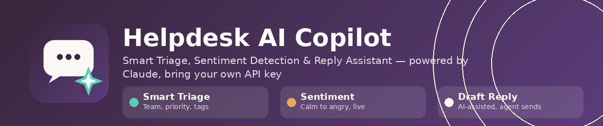
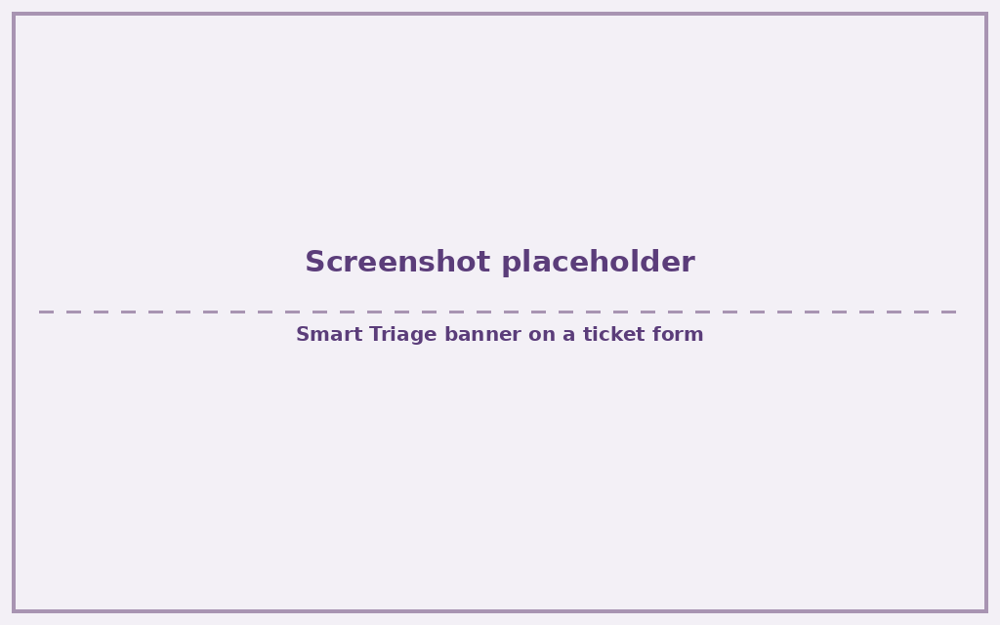
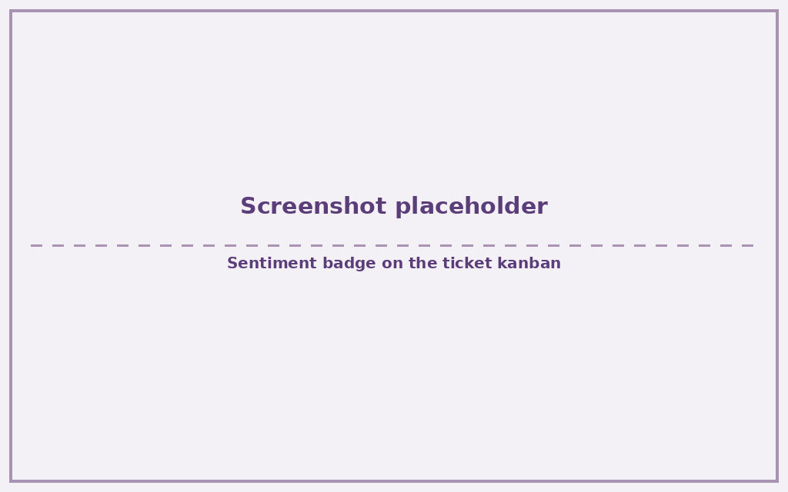
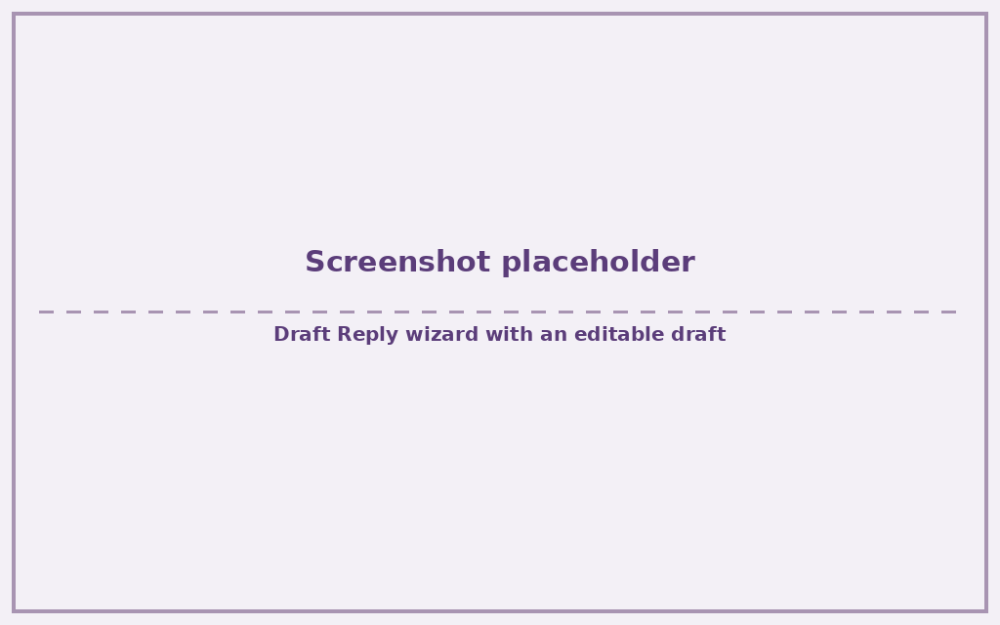
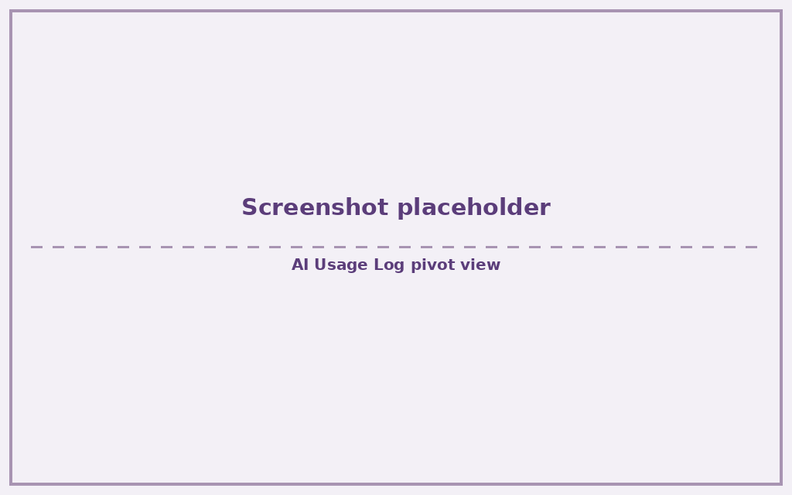

Claude-powered triage, sentiment detection, and reply drafting for Helpdesk Pro — bring your own Anthropic API key, no Enterprise license, no reseller markup.
The moment a ticket is created, Claude reads the subject and description and suggests a team, priority, and tags. High-confidence suggestions apply automatically; anything less certain shows as a banner with one-click Accept or Dismiss — the agent stays in control either way.
Every genuine inbound message — email or portal — is scored calm, neutral, frustrated, or angry, shown as a live badge on the ticket. An angry customer automatically bumps the ticket to Urgent priority and notifies the team's managers, so nothing frustrated slips through a busy queue.
One click drafts a professional, empathetic reply from the ticket's own conversation plus similar resolved tickets as reference — a lightweight RAG, no vector database required. The agent always reviews, edits, and sends; the AI never contacts the customer directly.
A pivot/graph AI Usage Log breaks down every call by team and type — tokens, cost estimate, and count — plus a per-team AI Accuracy stat button (accepted triage suggestions out of all triage calls made).




The full UI is also available in Arabic — see the Arabic user guide.
This app is free. You bring your own Anthropic API key and pay Anthropic directly — no markup, no subscription to this app itself. For a typical team doing 100 tickets/day (triage + sentiment on each, plus occasional reply drafts) on the default Claude Haiku model, that works out to roughly $3–10/month. See api-setup.md for how to get a key and set a spending limit before you start.
The full interface ships with an Arabic (ar)
translation alongside the English source strings — menus,
fields, buttons, and the sentiment/triage vocabulary. Demo data
installs with a Saudi business context so you can see the whole
module working, in either language, from the moment you install.
Requires Helpdesk Pro
(helpdesk_community_pro) to be installed first, and an
Anthropic API key of your
own. No Enterprise features, no other paid dependencies.
Questions and bug reports are welcome via the Store Q&A tab or as a GitHub issue. Source, tests, and CI are public: github.com/Zahoor-ishfaq/odoo-helpdesk-pro-ai.